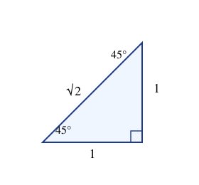
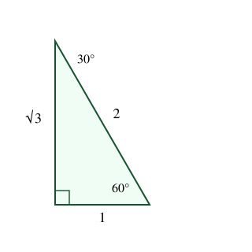

<script src="/assets/redirect.js"></script>
<section class="theory" data-section="P1-5.1">
<h2>5.1 Angles between 0° and 90°</h2>
<p class="src">Based on Cambridge International AS &amp; A Level Mathematics: Pure Mathematics 1 Coursebook (Sue Pemberton, series editor Julian Gilbey), Chapter 5 Trigonometry, printed pp.118–121 (physical PDF page = printed page + 12). Own wording and new numbers, following the coursebook definitions of sine, cosine and tangent in a right-angled triangle and the exact values from the two standard triangles.</p>
<p class="key-words"><strong>Key words:</strong> <em>sine ratio</em>, <em>cosine ratio</em>, <em>tan ratio</em>, <em>exact value</em></p>
<h3>The three ratios in a right-angled triangle</h3>
<p>For an acute angle \(\theta\) in a right-angled triangle,</p>
<p>\[\sin\theta=\frac{\text{opposite}}{\text{hypotenuse}}\]</p>
<p>\[\cos\theta=\frac{\text{adjacent}}{\text{hypotenuse}}\]</p>
<p>\[\tan\theta=\frac{\text{opposite}}{\text{adjacent}}.\]</p>
<p>These are the sine ratio, the cosine ratio and the tan ratio. If one of the ratios is given, a right-angled triangle can be drawn and Pythagoras’ theorem used to find the third side. The other two ratios then follow. Throughout this section the angle is between \(0^\circ\) and \(90^\circ\), so every ratio is positive.</p>
<div class="worked-example">
<h4>Worked example 1: Given one ratio</h4>
<p class="src">Coursebook, 5.1, a given cosine (Worked example 5.1 style). New value \(\cos\theta=\dfrac{5}{13}\).</p>
<p>Given that \(\cos\theta=\dfrac{5}{13}\) and that \(\theta\) is acute, find the exact values of \(\sin\theta\) and \(\tan\theta\).</p>
<ol class="steps">
<li>A right-angled triangle with adjacent \(5\) and hypotenuse \(13\) has opposite \(\sqrt{13^2-5^2}=12\) <span class="mark">M1</span></li>
<li>So \(\sin\theta=\dfrac{12}{13}\) and \(\tan\theta=\dfrac{12}{5}\) <span class="mark">A1</span></li>
</ol>
<p class="final"><strong>Answer:</strong> \(\sin\theta=\dfrac{12}{13}\), \(\tan\theta=\dfrac{12}{5}\)</p>
</div>
<h3>Exact values for \(30^\circ\), \(45^\circ\) and \(60^\circ\)</h3>
<p>Two right-angled triangles give the exact values that you are expected to know in this course, in degrees or in radians.</p>
<figure><figcaption>An isosceles right-angled triangle, used for the exact values at \(45^\circ\), or \(\dfrac{{\pi}}{{4}}\).</figcaption></figure>
<figure><figcaption>Half of an equilateral triangle of side \(2\), used for the exact values at \(30^\circ\) and \(60^\circ\), or \(\dfrac{{\pi}}{{6}}\) and \(\dfrac{{\pi}}{{3}}\).</figcaption></figure>
<table class="plain">
<thead>
<tr><th>\(\theta\)</th><th>\(\sin\theta\)</th><th>\(\cos\theta\)</th><th>\(\tan\theta\)</th></tr>
</thead>
<tbody>
<tr><td>\(30^\circ\)</td><td>\(\tfrac{1}{2}\)</td><td>\(\tfrac{\sqrt{3}}{2}\)</td><td>\(\tfrac{\sqrt{3}}{3}\)</td></tr>
<tr><td>\(45^\circ\)</td><td>\(\tfrac{\sqrt{2}}{2}\)</td><td>\(\tfrac{\sqrt{2}}{2}\)</td><td>\(1\)</td></tr>
<tr><td>\(60^\circ\)</td><td>\(\tfrac{\sqrt{3}}{2}\)</td><td>\(\tfrac{1}{2}\)</td><td>\(\sqrt{3}\)</td></tr>
</tbody>
</table>
<p>The same values are used in radians: \(30^\circ=\dfrac{\pi}{6}\), \(45^\circ=\dfrac{\pi}{4}\) and \(60^\circ=\dfrac{\pi}{3}\).</p>
<div class="worked-example">
<h4>Worked example 2: A product of exact values</h4>
<p class="src">Coursebook, 5.1, Worked example 5.2 style. New product \(2\sin 30^\circ\tan 45^\circ\).</p>
<p>Find the exact value of \(2\sin 30^\circ\tan 45^\circ\).</p>
<ol class="steps">
<li>\(2\times\dfrac{1}{2}\times 1=1\) <span class="mark">A1</span></li>
</ol>
<p class="final"><strong>Answer:</strong> \(1\)</p>
</div>
<h3>Common mistakes</h3>
<ul>
<li>Swapping opposite and adjacent, or using the hypotenuse in \(\tan\theta\).</li>
<li>Leaving a third side as an unsimplified square root when Pythagoras gives an integer (for example \(13^2-5^2=144\)).</li>
<li>Confusing \(\sin 30^\circ=\dfrac{1}{2}\) with \(\sin 60^\circ=\dfrac{\sqrt{3}}{2}\).</li>
</ul>
<h3>Past paper</h3>
<p class="src">9709/12/O/N/13 Q1, official QP and official MS.</p>
<p>Given that \(\cos x=p\), where \(x\) is an acute angle in degrees, find, in terms of \(p\),</p>
<p>(i) \(\sin x\), [1]</p>
<p>(ii) \(\tan x\), [1]</p>
<p>(iii) \(\tan(90^\circ-x)\). [1]</p>
<details><summary>Mark scheme</summary>
<ol class="steps">
<li>(i) \(\sin x=\sqrt{1-p^2}\) (positive, since \(x\) is acute). A plus-or-minus sign is B0. <span class="mark">B1</span></li>
<li>(ii) \(\tan x=\dfrac{\sin x}{\cos x}=\dfrac{\sqrt{1-p^2}}{p}\), using the answer to (i). <span class="mark">B1</span></li>
<li>(iii) \(\tan(90^\circ-x)=\dfrac{p}{\sqrt{1-p^2}}\), the reciprocal of (ii). <span class="mark">B1</span></li>
</ol>
</details>
<h3>Quick checks</h3>
<div class="quick-check">
<h4>Quick check 1</h4>
<p>Find the exact value of \(2\sin 30^\circ\).</p>
<details><summary>Worked solution</summary>
<ol class="steps">
<li>\(2\times\dfrac{{1}}{{2}}=1\)</li>
</ol>
<p class="final"><strong>Answer:</strong> \(1\)</p>
</details>
</div>
<div class="quick-check">
<h4>Quick check 2</h4>
<p>Find the exact value of \(2\tan 45^\circ\).</p>
<details><summary>Worked solution</summary>
<ol class="steps">
<li>\(\tan 45^\circ=1\), so the value is \(2\)</li>
</ol>
<p class="final"><strong>Answer:</strong> \(2\)</p>
</details>
</div>
<div class="quick-check">
<h4>Quick check 3</h4>
<p>Given that \(\sin\theta=\dfrac{{3}}{{5}}\) and that \(\theta\) is acute, find the value of \(5\cos\theta\).</p>
<details><summary>Worked solution</summary>
<ol class="steps">
<li>A right-angled triangle with opposite \(3\) and hypotenuse \(5\) has adjacent \(4\), so \(5\cos\theta=4\)</li>
</ol>
<p class="final"><strong>Answer:</strong> \(4\)</p>
</details>
</div>
</section>
